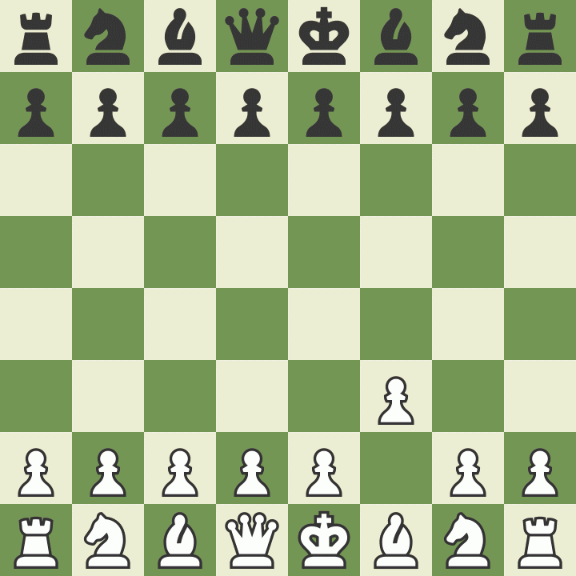

How to Play
The Goal of Chess
Chess is a game played between two opponents on opposite sides of a board containing 64 squares of alternating colors. Each player has 16 pieces: 1 king, 1 queen, 2 rooks, 2 bishops, 2 knights, and 8 pawns. The goal of the game is to checkmate the other king. Checkmate happens when the king is in a position to be captured (in check) and cannot escape from capture.
Starting the Game

At the beginning of the game the chessboard is laid out so that each player has the white (or light) color square in the bottom right-hand side.
The chess pieces are then arranged the same way each time. The second row is filled with pawns. The rooks go in the corners, then the knights next to them, followed by the bishops, and finally the queen, who always goes on her own matching color (white queen on white, black queen on black), and the king on the remaining square.
The player with the white pieces always moves first. Therefore, players generally decide who will get to be white by chance or luck such as flipping a coin or having one player guess the color of the hidden pawn in the other player's hand. White then makes a move, followed by black, then white again, then black and so on until the end of the game.
How the Pieces Move
Each of the 6 different kinds of pieces moves differently. Pieces cannot move through other pieces (though the knight can jump over other pieces), and can never move onto a square with one of their own pieces. However, they can be moved to take the place of an opponent's piece, which is then captured. Pieces are generally moved into positions where they can capture other pieces (by landing on their square and then replacing them), defend their own pieces in case of capture, or control important squares in the game.
The King

The king is the most important piece, but is one of the weakest. The king can only move one square in any direction - up, down, to the sides, and diagonally.
The Queen

The queen is the most powerful piece. She can move in any one straight direction - forward, backward, sideways, or diagonally - as far as possible as long as she does not move through any of her own pieces. And, like with all pieces, if the queen captures an opponent's piece her move is over.
The Bishop

The bishop may move as far as it wants, but only diagonally. Each bishop starts on one color (light or dark) and must always stay on that color. Bishops work well together because they cover up each other’s weaknesses.
The Knight

Knights move in a very different way from the other pieces – going two squares in one direction, and then one more move at a 90 degree angle, just like the shape of an “L”. Knights are also the only pieces that can move over other pieces.
The Pawn

Pawns are unusual because they move and capture in different ways: they move forward, but capture diagonally. Pawns can only move forward one square at a time, except for their very first move where they can move forward two squares. Pawns can only capture one square diagonally in front of them. They can never move or capture backwards. If there is another piece directly in front of a pawn he cannot move past or capture that piece.
The Rook

Rooks can move any number of squares, up and down and side to side.
Rules
Promotion
Pawns have a special ability and that is that if a pawn reaches the other side of the board it can become any other chess piece (called promotion). A pawn may be promoted to any piece. A common misconception is that pawns may only be exchanged for a piece that has been captured, which isn’t true. A pawn is usually promoted to a queen.
En Passant
The last rule about pawns is called “en passant,” which is French for “in passing”. If a pawn moves out two squares on its first move, and by doing so lands to the side of an opponent’s pawn (effectively jumping past the other pawn’s ability to capture it), that other pawn has the option of capturing the first pawn as it passes by. This special move must be done immediately after the first pawn has moved past, otherwise the option to capture it is no longer available.
Castling
One other special rule is called castling. This move allows you to do two important things all in one move: get your king to safety, and get your rook out of the corner and into the game. On a player’s turn he may move his king two squares over to one side and then move the rook from that side’s corner to right next to the king on the opposite side. However, in order to castle, the following conditions must be met:
- It must be that king’s very first move
- It must be that rook’s very first move
- There cannot be any pieces between the king and rook to move
- The king may not be in check or pass through check
Check & Checkmate
As stated before, the purpose of the game is to checkmate the opponent’s king. This happens when the king is put into check and cannot get out of check. There are only three ways a king can get out of check: move out of the way (though he cannot castle!), block the check with another piece, or capture the piece threatening the king. If a king cannot escape checkmate then the game is over.
Draws
Occasionally chess games do not end with a winner, but with a draw. There are 5 reasons why a chess game may end in a draw:
- The position reaches a stalemate where it is one player’s turn to move, but his king is NOT in check and yet he does not have another legal move
- The players may simply agree to a draw and stop playing
- There are not enough pieces on the board to force a checkmate (example: a king and a bishop vs. a king)
- A player declares a draw if the same exact position is repeated three times (though not necessarily three times in a row)
- Fifty consecutive moves have been played where neither player has moved a pawn or captured a piece
Chess960
Chess960 follows all the rules of standard chess, except for the starting position of pieces on the back rank, which are placed randomly in one of 960 possible positions. Castling is done just like in standard chess, with the King and Rook landing on their normal castled squares (g1 and f1, or c1 and d1). 960 plays just like standard chess, but with more variety in the opening.
Touch-Move
If a player touches one of their own pieces they must move that piece as long as it is a legal move. If a player touches an opponent’s piece, they must capture that piece. A player who wishes to touch a piece only to adjust it on the board must first announces the intention, usually by saying, “adjust”.
Introduction to Clocks & Timers
Most tournaments use timers to regulate the time spent on each game, not on each move. Each player gets the same amount of time to use for their entire game and can decide how to spend that time. Once a player makes a move they then touch a button or hit a lever to start the opponent’s clock. If a player runs out of time and the opponent calls the time, then the player who ran out of time loses the game (unless the opponent does not have enough pieces to checkmate, in which case it is a draw).
Basic Strategy
1. Protect your King
Get your king to the corner of the board where he is usually safer. Don’t put off castling. You should usually castle as quickly as possible. Remember, it doesn’t matter how close you are to checkmating your opponent if your own king is checkmated first!
Don’t give pieces away
Don’t carelessly lose your pieces! Each piece is valuable and you can’t win a game without pieces to checkmate. There is an easy system that most players use to keep track of the relative value of each chess piece:- A pawn is worth 1
- A knight is worth 3
- A bishop is worth 3
- A rook is worth 5
- A queen is worth 9
Control the center
You should try and control the center of the board with your pieces and pawns. If you control the center, you will have more room to move your pieces and will make it harder for your opponent to find good squares for his pieces. In the example above white makes good moves to control the center while black plays bad moves.
Use all of your pieces
In the example above white got all of his pieces in the game! Your pieces don’t do any good when they are sitting back on the first row. Try and develop all of your pieces so that you have more to use when you attack the king. Using one or two pieces to attack will not work against any decent opponent.